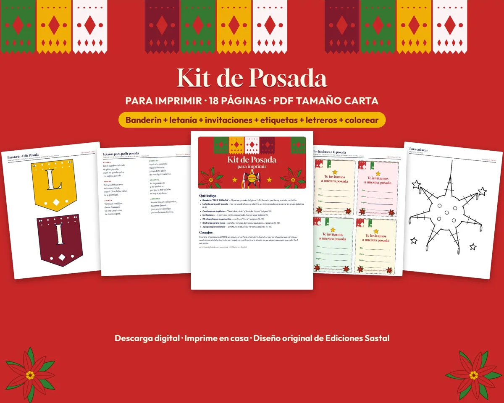

Cómo se canta
Los peregrinos, con velas, cantan su verso pidiendo posada.
Los de la casa responden negándola, hasta que reconocen a José y María.
Se abre la puerta y todos cantan juntos «Entren, santos peregrinos».
Consejo: imprime una copia por cada 2 o 3 personas, y otra para los de adentro.
La letra completa
Afuera
En el nombre del cielo
os pido posada,
pues no puede andar
mi esposa amada.
Adentro
Aquí no es mesón,
sigan adelante;
yo no debo abrir,
no sea algún tunante.
Afuera
No seas inhumano,
tennos caridad,
que el Dios de los cielos
te lo premiará.
Adentro
Ya se pueden ir
y no molestar,
porque si me enfado
os voy a apalear.
Afuera
Venimos rendidos
desde Nazaret;
yo soy carpintero
de nombre José.
Adentro
No me importa el nombre,
déjenme dormir,
pues que yo les digo
que no hemos de abrir.
Afuera
Posada te pide,
amado casero,
por solo una noche
la Reina del Cielo.
Adentro
Pues si es una reina
quien lo solicita,
¿cómo es que de noche
anda tan solita?
Afuera
Mi esposa es María,
es Reina del Cielo
y madre va a ser
del Divino Verbo.
Adentro
¿Eres tú, José?
¿Tu esposa es María?
Entren, peregrinos,
no los conocía.
Afuera
Dios pague, señores,
vuestra caridad,
y que os colme el cielo
de felicidad.
Adentro
¡Dichosa la casa
que alberga este día
a la Virgen pura,
la hermosa María!
Todos, al abrir la puerta
Entren, santos peregrinos, peregrinos,
reciban este rincón,
que aunque es pobre la morada, la morada,
os la doy de corazón.
Cantemos con alegría, alegría,
todos al considerar
que Jesús, José y María, y María,
nos vinieron a honrar.

¿Vas a organizar la posada?
Esta letanía es parte de nuestro Kit de Posada para imprimir, 18 páginas listas para tu fiesta:
- Banderín «Feliz Posada» de 12 piezas
- Invitaciones y 20 etiquetas para aguinaldos
- 8 letreros para la mesa: ponche, tamales, piñata…
- Canciones de la piñata y 3 páginas para colorear